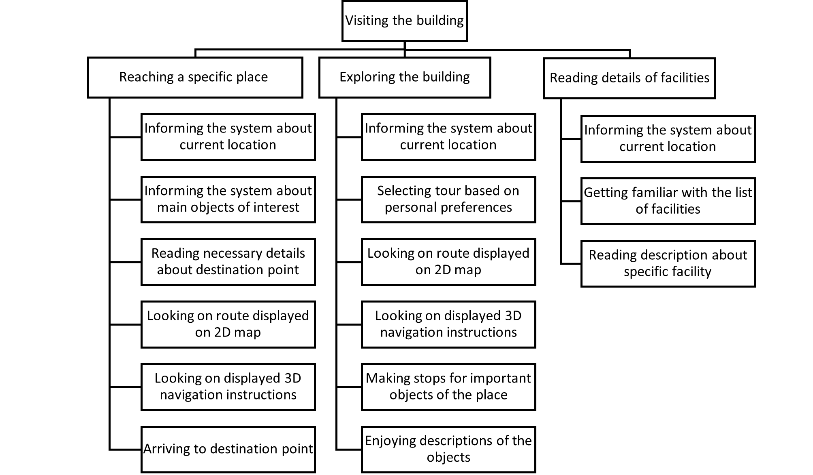
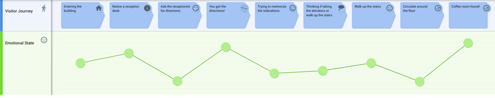
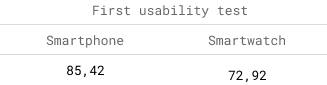
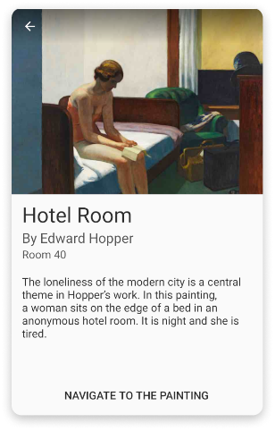
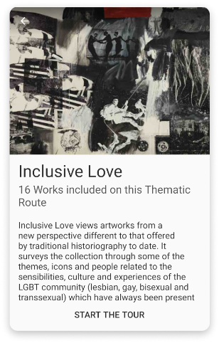

process
The
user center design methodology was applied in this project so the design process can be divided into the four steps of this approach.
understanding of the context of use
Indoor navigation could be very different depending on the building, so for the study of the context of use we decided to interview and observe people in three different environments, museums, universities, and shopping malls. In all these environments we identified two types of users, visitors, and managers of the place. In the end, 17 people were interviewed with semi-structured questions and 8 people were observed with an ethnographical approach. After analyzing the results, the next insights were extracted.
1. We identified that the users only felt lost in the universities in the first weeks but after it, they get used to it and they do not have big problems.
2. We identified that the users do not mind getting lost in the shopping malls because for them it is a part of the activity experience.
3. We identified that the users usually get lost in museums and the actual solutions are not enough.
4. In the museums the people not only want to see the most important masterpieces but they also usually look for information.
5. In the museums, managers need to rearrange some spaces due to temporary expositions and this can produce some guidance problems for the visitors.
specification of user requirements
Based on the previous insights we decided to focus on the museums as the main building where target our app, so we could analyze better the target users (people visiting museums) and try to offer the best solution possible for them.
Also, we wanted to target the managers of the places, so for the museums, we decided to provide the features needed to edit the maps of the rooms for temporary exhibitions that need to rearrange spaces.
To empathize with the users and understand their needs we applied different techniques such as task organization models,
user journey maps,
tasks scenarios, and environment analysis.

Task organization model of the visitor

User Journey map of the visitor
design of solution
In the prototype's design, two phases were addressed, in the first one, we designed a low fidelity version, then we validated it in usability testing, and after it, a high fidelity version was created.
In the first phase, two versions of the system were designed, and then in the second one, we selected only the one with better results in the usability testing.
One was a smartphone version with augmented reality capabilities. This technology will allow users to receive indications and information in the real view that they are seeing. This version was the selected one in the evaluation and the one that we used for the high fidelity prototype.
Low fidelity prototpye of the smarthpone version
High fidelity prototpye of the smarthpone version
Before starting with the creation of prototypes for the solution, different techniques were applied like navigation maps or scheme layouts.
Low fidelity prototpye of the smartwatch version
evaluation
Two usability tests were performed, one after designing the two low fidelity versions, in this one we compared the two versions and analyzed which one was the preferred one by the users. And another usability testing after designing the high fidelity prototype and improved it with the feedback of the first usability test.
The usability tests due to the COVID-19 situation were performed online in video call sessions. In each of the tests, we conducted a personal information questionnaire for some statistics, an analysis of the effectiveness and efficiency of the results, a
System Usability Scale (SUS) questionnaire, and a general impressions interview.

SUS results
final design
indoor navigation
We designed an augmented reality navigation system. This system will allow the user to receive indication in their screens providing information over the view of the cameras of their smartphones. The users can use this feature to receive indications to arrive at any art piece in the museum.
AR navigation
artworks information
The users can review information about the different art pieces of the museum with normal text view, or with augmented reality mode, displaying the info of the artworks that the user points with their cameras.

Text view description
tours
For the users that have more time and want to see some important art pieces with characteristics in common, a tour system was designed, with this, the users will receive indications in augmented reality to arrive at the different art pieces that are related in a collection.

Home screen with the option of tours

Description of a tour